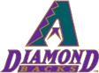
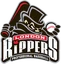

Top Prospects
The OSA preseason Top 100 prospects, split by the tier of the parent club and ranked within that tier, (March 30, 2002). “Lvl (pre)” is where the player started the year; the 2002 columns show where he has actually played and how.
Best-Tools Notes
- Best power: Jose Bautista (Boston), Encarnacion (Dallas)
- Best eye: Felix Pie (OKC), Bautista (BOS), Choo (OAK), Encarnacion, Robert Andino (Detroit)
- Best Contact: Cano (Atlanta), Crawford (Miami), Jason Bartlett (Brewers) Joaquin Arias (mexico City)
- Best speed: Joey Gathright (SLB), Fred Lewis (Monterrey), Jason Pridie (Atlanta)
- Best defender: Carl Crawford (Atlanta), Endy Chavez (Cherry Blossoms)
- Best stuff: Jake peavy (SFS), Zack Greinke (Cardinals)
- Best Control: Zack Grinke (Cardinals), Ricky Nolasco (Dodgers), Randy Wells (Dodgers), John Koronka (PORT), Abel Moreno (SanAn)
- Best Relievers: Joakim Soria (DAL), Pat Neshek (COL)
- Eye/Discipline
- 80.0
- 60.0
- 50.0
MLB Organizations: Top Hitting Prospects
| # | Player | Team | Age | Pos | Lvl (pre) | Contact | Power | Eye | Speed | Defense | 2002 Lvl | PA | AVG | OBP | SLG | HR | OPS+ | WAR |
|---|---|---|---|---|---|---|---|---|---|---|---|---|---|---|---|---|---|---|
| 4 | Jose Bautista |  Boston Red Sox Boston Red Soxnow  Vermont Lake Monsters Vermont Lake Monsters | 21 | 3B | AAA | 45 | 85 | 80 | 45 | 35 | High Minors | 164 | .211 | .278 | .320 | 2 | 52 | -0.8 |
| 6 | Curtis Granderson |  Detroit Wolverines Detroit Wolverinesnow Ann Arbor Robins | 21 | CF | AAA | 50 | 80 | 60 | 60 | 40 | High Minors | 174 | .324 | .425 | .453 | 3 | 124 | 1.4 |
| 7 | Carl Crawford |  Miami Marlins Miami Marlins | 20 | LF | MLB | 75 | 50 | 50 | 70 | 75 | MLB | 181 | .260 | .298 | .402 | 3 | 88 | 1.1 |
| 8 | Shin-Soo Choo |  Oakland Athletics Oakland Athleticsnow  Bakersfield Sequioas Bakersfield Sequioas | 19 | CF | A | 65 | 60 | 80 | 75 | 25 | High Minors | 168 | .207 | .286 | .387 | 6 | 70 | 0.1 |
| 12 | Robinson Cano |  Atlanta Braves Atlanta Bravesnow  Augusta GreenJackets Augusta GreenJackets | 19 | 2B | AAA | 75 | 55 | 55 | 55 | 35 | High Minors | 179 | .321 | .402 | .526 | 7 | 135 | 1.2 |
| 13 | Mike Morse | Detroit Wolverines now Ann Arbor Robins | 20 | 2B | AAA | 55 | 75 | 50 | 55 | 35 | High Minors | 175 | .278 | .339 | .418 | 4 | 92 | 0.2 |
| 15 | Corey Hart |  Colorado Rockies Colorado Rockies | 20 | 3B | MLB | 55 | 75 | 55 | 65 | 30 | MLB | 138 | .211 | .268 | .367 | 5 | 70 | -0.2 |
| 16 | Shane Victorino |  Los Angeles Dodgers Los Angeles Dodgers | 21 | CF | MLB | 55 | 60 | 45 | 65 | 40 | MLB | 165 | .205 | .233 | .327 | 3 | 50 | -1.1 |
| 18 | Jason Bartlett |  Milwaukee Brewers Milwaukee Brewers | 22 | SS | MLB | 75 | 50 | 50 | 75 | 35 | MLB | 138 | .139 | .219 | .172 | 0 | 9 | -1.5 |
| 22 | Edwin Encarnacion |  Dallas Griffins Dallas Griffins | 19 | 1B | MLB | 50 | 80 | 75 | 55 | 30 | MLB | 66 | .175 | .212 | .222 | 1 | 18 | -0.5 |
| 23 | Brandon Phillips |  Toronto Blue Jays Toronto Blue Jays | 20 | 2B | MLB | 65 | 60 | 50 | 65 | 30 | MLB | 21 | .286 | .286 | .333 | 0 | 68 | -0.1 |
| 25 | Brandon Moss |  St. Louis Cardinals St. Louis Cardinalsnow  Iowa Dusters Iowa Dusters | 18 | 2B | AAA | 50 | 80 | 65 | 55 | 35 | High Minors | 178 | .267 | .315 | .412 | 6 | 84 | 0.0 |
| 28 | Wilson Betemit | Los Angeles Dodgers | 20 | SS | MLB | 70 | 60 | 65 | 60 | - | MLB | 150 | .234 | .272 | .387 | 4 | 76 | -0.7 |
| 29 | Angel Pagan |  Chicago Cubs Chicago Cubsnow  Rockford Peaches Rockford Peaches | 20 | CF | A | 60 | 45 | 50 | 70 | 30 | High Minors | 98 | .216 | .289 | .261 | 1 | 42 | 0.0 |
| 30 | Jonny Gomes | Colorado Rockies | 21 | LF | MLB | 45 | 55 | 55 | 50 | 30 | MLB | 78 | .162 | .231 | .250 | 2 | 31 | -0.5 |
| 33 | Russell Martin | Chicago Cubs now Rockford Peaches | 19 | C | A | 55 | 70 | 65 | 55 | 30 | Low Minors | 103 | .312 | .353 | .573 | 6 | 131 | 0.8 |
| 34 | Ryan Doumit |  San Francisco Seals San Francisco Seals | 20 | C | MLB | 65 | 55 | 45 | 35 | 25 | MLB | 126 | .230 | .298 | .372 | 4 | 81 | 0.4 |
| 36 | Mark Teahen |  New York Yankees New York Yankees | 20 | 1B | MLB | 50 | 55 | 55 | 45 | 40 | MLB | 11 | .111 | .273 | .111 | 0 | 11 | -0.1 |
| 37 | Jayson Nix | Colorado Rockies | 19 | 2B | MLB | 45 | 50 | 50 | 50 | 35 | High Minors | 152 | .295 | .388 | .403 | 2 | 102 | 0.7 |
| 41 | Endy Chavez |  Washington Cherry Blossoms Washington Cherry Blossoms | 24 | LF | MLB | 70 | 30 | 45 | 70 | 75 | MLB | 157 | .203 | .244 | .291 | 3 | 44 | -0.4 |
| 43 | Brendan Harris | New York Yankees now  Rochester Red Wings Rochester Red Wings | 21 | 3B | AAA | 60 | 45 | 50 | 55 | 30 | High Minors | 121 | .204 | .281 | .324 | 3 | 54 | -0.2 |
| 44 | Rajai Davis | Milwaukee Brewers now  Wisconsin Woodchucks Wisconsin Woodchucks | 21 | LF | A | 65 | 40 | 45 | 65 | 45 | Low Minors | 98 | .322 | .398 | .379 | 1 | 99 | 0.6 |
| 45 | Howie Kendrick | Oakland Athletics now Bakersfield Sequioas | 18 | 1B | AAA | 75 | 50 | 45 | 60 | 35 | High Minors | 180 | .269 | .343 | .388 | 3 | 86 | 0.1 |
| 50 | Gregor Blanco | Dallas Griffins now  Fort Worth Quakers Fort Worth Quakers | 18 | RF | A | 55 | 40 | 65 | 75 | 30 | Low Minors | 182 | .287 | .358 | .456 | 4 | 106 | 1.2 |
| 52 | Jose Lopez | Chicago Cubs now Rockford Peaches | 18 | 2B | AAA | 60 | 50 | 45 | 55 | 35 | High Minors | 175 | .304 | .366 | .513 | 6 | 121 | 0.9 |
| 58 | Jeremy Hermida | San Francisco Seals now  Modesto Nuts Modesto Nuts | 18 | LF | A | 55 | 65 | 65 | 55 | 35 | Low Minors | 181 | .285 | .343 | .406 | 5 | 90 | 1.2 |
| 59 | Jack Hannahan | Washington Cherry Blossoms | 22 | 3B | AAA | 50 | 45 | 50 | 45 | 45 | High Minors | 169 | .314 | .351 | .397 | 2 | 91 | 0.5 |
| 62 | Jason Pridie | Atlanta Braves now Augusta GreenJackets | 18 | LF | AAA | 40 | 50 | 45 | 80 | 35 | Low Minors | 113 | .277 | .354 | .495 | 4 | 114 | 0.9 |
| 63 | Robert Andino | Detroit Wolverines now Ann Arbor Robins | 17 | 3B | A | 60 | 40 | 70 | 60 | 30 | Low Minors | 137 | .311 | .358 | .451 | 4 | 104 | 0.3 |
| 64 | Alex Romero | San Francisco Seals now Modesto Nuts | 18 | LF | AAA | 45 | 40 | 45 | 45 | 35 | Low Minors | 122 | .315 | .383 | .370 | 0 | 93 | 0.3 |
| 65 | Ivan Ochoa | Los Angeles Dodgers now  Hollywood Spoonbills Hollywood Spoonbills | 19 | 2B | A | 45 | 35 | 45 | 70 | 35 | Low Minors | 108 | .268 | .298 | .381 | 2 | 72 | -0.6 |
| 66 | Josh Barfield | St. Louis Cardinals now Quad Cities River Bandits | 19 | 2B | AAA | 60 | 45 | 40 | 45 | 30 | High Minors | 156 | .250 | .321 | .343 | 3 | 69 | -0.8 |
| 70 | Willie James | Colorado Rockies now  Sioux Falls Canaries Sioux Falls Canaries | 20 | 2B | AAA | 25 | 25 | 40 | 65 | 30 | Low Minors | 36 | .171 | .194 | .343 | 1 | 34 | -0.3 |
| 71 | Brady Williams | Los Angeles Dodgers now  Southern California Trojans Southern California Trojans | 22 | 3B | AAA | 30 | 40 | 45 | 45 | 35 | Low Minors | 61 | .273 | .344 | .509 | 3 | 114 | 0.1 |
| 72 | Adam Bonner | Los Angeles Dodgers now Southern California Trojans | 21 | CF | AAA | 35 | 45 | 45 | 50 | 35 | High Minors | 88 | .269 | .352 | .346 | 1 | 79 | 0.0 |
| 73 | Glenn Williams | Los Angeles Dodgers now Hollywood Spoonbills | 24 | 2B | A | 40 | 50 | 45 | 50 | 35 | High Minors | 158 | .179 | .247 | .262 | 2 | 30 | -1.0 |
| 74 | Mewelde Moore | Los Angeles Dodgers now Southern California Trojans | 19 | CF | AAA | 25 | 35 | 40 | 65 | 35 | Low Minors | 93 | .214 | .290 | .250 | 0 | 39 | -0.2 |
| 75 | Isaac Iorg | Los Angeles Dodgers now Southern California Trojans | 22 | 1B | AAA | 35 | 35 | 40 | 50 | 35 | High Minors | 15 | .231 | .333 | .231 | 0 | 47 | -0.1 |
| 76 | Ryan Newman | Dallas Griffins | 23 | 2B | AAA | 25 | 30 | 45 | 50 | 35 | Low Minors | 1 | .000 | .000 | .000 | 0 | -100 | 0.0 |
| 78 | Mike Rose | Chicago Cubs | 25 | 1B | MLB | 45 | 45 | 70 | 45 | 35 | MLB | 36 | .294 | .333 | .382 | 0 | 94 | 0.2 |
| 85 | Pee Wee Lopez | Atlanta Braves now Augusta GreenJackets | 25 | C | AAA | 40 | 40 | 45 | 40 | 35 | High Minors | 121 | .354 | .392 | .637 | 7 | 157 | 1.5 |
| 87 | Casey Martinez | Los Angeles Dodgers now Southern California Trojans | 24 | C | A | 30 | 35 | 40 | 30 | 35 | Low Minors | 143 | .321 | .378 | .466 | 4 | 113 | 0.9 |
| 88 | Scott Moore | Milwaukee Brewers now  Madison Mallards Madison Mallards | 18 | 1B | AAA | 45 | 60 | 45 | 50 | 35 | Low Minors | 169 | .280 | .345 | .460 | 8 | 103 | 0.3 |
| 89 | Reggie Abercrombie | Miami Marlins now  Fort Myers Mighty Mussels Fort Myers Mighty Mussels | 21 | LF | AAA | 45 | 50 | 40 | 75 | 40 | High Minors | 169 | .286 | .329 | .461 | 7 | 99 | 1.4 |
| 92 | Tim Olson | Boston Red Sox now Vermont Lake Monsters | 23 | CF | AAA | 50 | 40 | 50 | 50 | 30 | High Minors | 158 | .270 | .348 | .475 | 6 | 108 | 0.9 |
| 93 | Matt Cepicky |  Houston Astros Houston Astrosnow  Sugar Land Space Cowboys Sugar Land Space Cowboys | 24 | 1B | AAA | 45 | 50 | 40 | 50 | 35 | High Minors | 169 | .293 | .343 | .510 | 9 | 114 | 0.7 |
| 94 | Sergio Contreras |  Philadelphia Phillies Philadelphia Philliesnow Scranton/Wilkes-Barre Red Barons | 21 | 1B | A | 45 | 45 | 50 | 60 | 30 | Low Minors | 151 | .341 | .384 | .478 | 3 | 118 | 0.5 |
| 100 | Frank Diaz | Dallas Griffins now  Amarillo Sod Poodles Amarillo Sod Poodles | 18 | LF | A | 45 | 50 | 45 | 65 | 35 | Low Minors | 159 | .294 | .358 | .413 | 1 | 96 | 0.4 |
MLB Organizations: Top Pitching Prospects
| # | Player | Team | Age | Role | Lvl (pre) | Stuff | Movement | Control | 2002 Lvl | IP | W-L | ERA | FIP | K | BB | WAR |
|---|---|---|---|---|---|---|---|---|---|---|---|---|---|---|---|---|
| 1 | Jake Peavy | San Francisco Seals | 20 | SP | MLB | 90 | 65 | 60 | MLB | 53.2 | 4-2 | 3.35 | 2.60 | 63 | 19 | 1.7 |
| 2 | Mark Prior | Atlanta Braves | 21 | SP | MLB | 90 | 50 | 55 | MLB | 61.2 | 3-6 | 2.48 | 2.16 | 69 | 21 | 2.5 |
| 3 | Zack Greinke | St. Louis Cardinals | 18 | SP | MLB | 75 | 70 | 85 | MLB | 49.1 | 4-3 | 4.20 | 6.66 | 30 | 13 | -0.8 |
| 5 | John Lackey | Dallas Griffins | 23 | SP | MLB | 70 | 60 | 65 | MLB | 51.0 | 3-4 | 4.76 | 3.98 | 36 | 30 | 0.8 |
| 9 | Francisco Liriano |  Arizona Diamondbacksnow  Tuscon Saguros Tuscon Saguros | 18 | SP | A | 85 | 60 | 60 | Low Minors | 41.0 | 3-2 | 3.07 | 3.11 | 41 | 18 | 1.2 |
| 10 | Ricky Nolasco | Los Angeles Dodgers now Hollywood Spoonbills | 19 | SP | AAA | 80 | 50 | 85 | High Minors | 41.2 | 3-4 | 8.64 | 5.45 | 34 | 23 | 0.1 |
| 11 | Charlie Morton | Dallas Griffins now Fort Worth Quakers | 18 | SP | A | 80 | 65 | 60 | Low Minors | 42.1 | 2-2 | 2.76 | 3.81 | 49 | 17 | 0.9 |
| 14 | Joakim Soria | Dallas Griffins now Fort Worth Quakers | 17 | CL | AAA | 85 | 55 | 75 | High Minors | 8.2 | 1-1 | 5.19 | 8.27 | 5 | 4 | -0.4 |
| 17 | Bobby Jenks | Milwaukee Brewers now Madison Mallards | 21 | RP | A | 65 | 70 | 55 | Low Minors | 20.0 | 2-1 | 3.15 | 2.63 | 31 | 12 | 0.8 |
| 19 | Jon Lester | Colorado Rockies now  Rocky Mountain Vibes Rocky Mountain Vibes | 18 | SP | AAA | 80 | 55 | 50 | High Minors | 45.2 | 1-2 | 4.34 | 4.73 | 35 | 21 | 0.5 |
| 20 | Pat Neshek | Colorado Rockies | 21 | RP | MLB | 80 | 50 | 80 | MLB | 7.1 | 0-2 | 9.82 | 7.25 | 6 | 2 | -0.2 |
| 21 | Justin Duchscherer | St. Louis Cardinals | 24 | RP | MLB | 55 | 55 | 70 | MLB | 18.0 | 1-0 | 0.50 | 1.86 | 14 | 4 | 0.8 |
| 24 | Matt Belisle | Boston Red Sox | 21 | RP | MLB | 50 | 55 | 85 | MLB | 23.2 | 2-2 | 1.90 | 3.26 | 14 | 6 | 0.5 |
| 26 | Carlos Marmol | Atlanta Braves | 19 | RP | MLB | 80 | 80 | 25 | MLB | 15.2 | 0-0 | 3.45 | 6.77 | 9 | 13 | -0.4 |
| 27 | Jeremy Affeldt | Detroit Wolverines | 22 | RP | MLB | 60 | 70 | 45 | MLB | 16.0 | 0-2 | 3.38 | 4.81 | 10 | 8 | -0.2 |
| 31 | Matt Cain | Miami Marlins now Fort Myers Mighty Mussels | 17 | SP | AAA | 85 | 55 | 50 | High Minors | 53.1 | 4-4 | 4.39 | 5.07 | 42 | 28 | 0.3 |
| 32 | Manny Delcarmen | Atlanta Braves now  Carolina Twins Carolina Twins | 20 | RP | MLB | 65 | 55 | 45 | Low Minors | 9.1 | 0-1 | 0.96 | 2.62 | 10 | 4 | 0.2 |
| 35 | Oscar Villarreal | Philadelphia Phillies | 20 | RP | MLB | 60 | 60 | 50 | MLB | 16.2 | 0-0 | 3.24 | 3.41 | 16 | 10 | 0.3 |
| 38 | Joel Zumaya |  Seattle Mariners Seattle Marinersnow Spokane Chiefs | 17 | CL | AAA | 85 | 65 | 50 | Low Minors | 12.0 | 1-1 | 0.75 | 2.48 | 12 | 4 | 0.4 |
| 39 | Edwin Jackson | Boston Red Sox | 18 | RP | MLB | 80 | 50 | 55 | MLB | 35.1 | 3-3 | 3.06 | 3.12 | 30 | 17 | 0.8 |
| 40 | Roberto H. Hernandez |  Brooklyn Gothams Brooklyn Gothamsnow  Queens Cavaliers Queens Cavaliers | 21 | SP | AAA | 45 | 65 | 65 | High Minors | 5.0 | 1-0 | 3.60 | 1.79 | 5 | 1 | 0.2 |
| 42 | Taylor Buchholz | Chicago Cubs now  Notre Dame Fighting Irish Notre Dame Fighting Irish | 20 | RP | AAA | 50 | 70 | 60 | High Minors | 15.1 | 1-1 | 5.87 | 5.08 | 16 | 3 | -0.1 |
| 46 | Randy Wells | Los Angeles Dodgers now Hollywood Spoonbills | 19 | SP | AAA | 50 | 55 | 80 | High Minors | 47.1 | 5-2 | 4.18 | 3.89 | 55 | 22 | 1.0 |
| 47 | Matt Capps | Miami Marlins now  St. Lucie Snowbirds St. Lucie Snowbirds | 18 | RP | A | 50 | 75 | 80 | Low Minors | 22.2 | 0-0 | 4.76 | 4.76 | 22 | 5 | 0.0 |
| 48 | Jim Johnson | Arizona Diamondbacks now Tuscon Saguros | 18 | RP | A | 50 | 75 | 75 | Low Minors | 9.1 | 3-1 | 1.93 | 4.87 | 3 | 2 | 0.0 |
| 49 | Nick Masset | Atlanta Braves now Carolina Twins | 19 | RP | A | 65 | 50 | 55 | Low Minors | 15.0 | 0-0 | 1.20 | 3.01 | 17 | 5 | 0.3 |
| 51 | Scott Olsen | Boston Red Sox now Vermont Lake Monsters | 18 | SP | AAA | 65 | 50 | 50 | High Minors | 50.1 | 5-3 | 4.11 | 4.01 | 54 | 27 | 0.9 |
| 53 | Mike MacDougal | Dallas Griffins | 25 | RP | MLB | 60 | 70 | 40 | MLB | 15.0 | 0-0 | 3.60 | 4.35 | 12 | 16 | 0.0 |
| 54 | Manny Corpas | Dallas Griffins now Fort Worth Quakers | 19 | RP | A | 50 | 55 | 70 | Low Minors | 32.1 | 2-0 | 1.39 | 2.89 | 28 | 8 | 0.7 |
| 55 | Macay McBride | Colorado Rockies now Sioux Falls Canaries | 19 | RP | AAA | 60 | 70 | 35 | High Minors | 14.1 | 0-2 | 3.77 | 2.56 | 12 | 5 | 0.6 |
| 56 | Colby Lewis | Boston Red Sox | 22 | SP | MLB | 55 | 50 | 60 | MLB | 46.1 | 2-6 | 6.99 | 5.47 | 40 | 30 | -0.1 |
| 57 | Craig Breslow | Washington Cherry Blossoms now Bethesda Big Train | 21 | RP | A | 55 | 50 | 50 | Low Minors | 26.1 | 0-1 | 4.10 | 5.72 | 20 | 20 | -0.2 |
| 60 | Gary Majewski | Atlanta Braves now Carolina Twins | 22 | CL | A | 55 | 70 | 45 | Low Minors | 13.2 | 0-2 | 3.95 | 4.43 | 10 | 10 | 0.1 |
| 61 | David Pauley | Seattle Mariners now Walla Walla Sweets | 18 | SP | AAA | 45 | 50 | 80 | High Minors | 48.2 | 2-1 | 2.22 | 3.67 | 44 | 21 | 1.1 |
| 67 | John Grabow | Brooklyn Gothams now Queens Cavaliers | 23 | RP | AAA | 50 | 50 | 40 | High Minors | 12.0 | 0-2 | 5.25 | 5.53 | 6 | 7 | -0.2 |
| 68 | Jared Abruzzo | Philadelphia Phillies now  Harrisburg Senators Harrisburg Senators | 20 | RP | A | 20 | 85 | 80 | Low Minors | 16.0 | 1-1 | 4.50 | 5.29 | 2 | 7 | -0.1 |
| 69 | Todd Wellemeyer | Dallas Griffins now Amarillo Sod Poodles | 23 | RP | AAA | 60 | 50 | 40 | Low Minors | 21.1 | 2-2 | 4.64 | 3.48 | 23 | 9 | 0.3 |
| 77 | Matt Palmer | Chicago Cubs now Rockford Peaches | 23 | SP | AAA | 45 | 55 | 40 | High Minors | 51.0 | 4-0 | 2.82 | 4.43 | 37 | 31 | 0.7 |
| 79 | Phil Dumatrait | Seattle Mariners now Walla Walla Sweets | 20 | SP | AAA | 45 | 50 | 45 | High Minors | 38.1 | 1-2 | 4.46 | 4.89 | 41 | 23 | 0.3 |
| 80 | Seth McClung | Atlanta Braves now Carolina Twins | 21 | RP | AAA | 50 | 45 | 40 | Low Minors | 22.0 | 2-0 | 3.68 | 4.75 | 17 | 10 | 0.0 |
| 81 | Enrique Gonzalez | St. Louis Cardinals now Iowa Dusters | 19 | SP | A | 45 | 50 | 45 | Low Minors | 32.1 | 1-0 | 3.06 | 3.60 | 25 | 4 | 0.7 |
| 82 | Buddy Hernandez | Toronto Blue Jays now  London Rippers | 23 | RP | AAA | 65 | 45 | 35 | High Minors | 19.1 | 2-0 | 0.93 | 2.11 | 23 | 4 | 0.7 |
| 83 | Kason Gabbard | Atlanta Braves now Augusta GreenJackets | 19 | SP | A | 50 | 55 | 35 | Low Minors | 41.1 | 3-3 | 2.83 | 3.67 | 43 | 13 | 0.9 |
| 84 | Fernando Nieve | Atlanta Braves now Carolina Twins | 19 | CL | AAA | 50 | 50 | 50 | Low Minors | 16.0 | 0-0 | 1.69 | 3.35 | 18 | 7 | 0.2 |
| 86 | Tim Corcoran | Brooklyn Gothams now Queens Cavaliers | 23 | RP | AAA | 45 | 55 | 40 | High Minors | 14.0 | 1-1 | 5.14 | 4.34 | 9 | 6 | 0.1 |
| 90 | Willie Eyre | San Francisco Seals now  San Jose Churros San Jose Churros | 23 | RP | AAA | 45 | 50 | 40 | High Minors | 17.0 | 1-2 | 6.35 | 4.84 | 14 | 9 | 0.0 |
| 91 | Hugo Castellanos | Atlanta Braves now Carolina Twins | 21 | RP | AAA | 45 | 45 | 40 | Low Minors | 18.1 | 2-1 | 0.98 | 3.86 | 14 | 3 | 0.2 |
| 95 | Joe Bateman | Colorado Rockies now Rocky Mountain Vibes | 21 | RP | AAA | 45 | 45 | 45 | Low Minors | 10.1 | 1-1 | 5.23 | 8.80 | 6 | 5 | -0.5 |
| 96 | Mike Gallo | Toronto Blue Jays now London Rippers | 24 | CL | A | 40 | 45 | 55 | Low Minors | 11.1 | 1-1 | 2.38 | 5.24 | 9 | 3 | -0.2 |
| 97 | Brian Bass | Dallas Griffins now Fort Worth Quakers | 20 | RP | A | 40 | 55 | 40 | Low Minors | 27.2 | 2-0 | 3.25 | 3.37 | 17 | 4 | 0.4 |
| 98 | Chris Mabeus | New York Yankees now  Buffalo Bisons Buffalo Bisons | 23 | RP | AAA | 45 | 40 | 40 | High Minors | 16.2 | 1-2 | 2.70 | 3.37 | 14 | 6 | 0.3 |
| 99 | Ross Peeples | Washington Cherry Blossoms now  DC Pandas DC Pandas | 22 | SP | A | 40 | 45 | 45 | High Minors | 42.1 | 4-1 | 3.83 | 5.44 | 29 | 24 | 0.2 |
ABL Organizations: Top Hitting Prospects
| # | Player | Team | Age | Pos | Lvl (pre) | Contact | Power | Eye | Speed | Defense | 2002 Lvl | PA | AVG | OBP | SLG | HR | OPS+ | WAR |
|---|---|---|---|---|---|---|---|---|---|---|---|---|---|---|---|---|---|---|
| 1 | Garrett Jones |  Cincinnati Reds Cincinnati Redsnow  St. Louis Browns St. Louis Browns | 20 | LF | A | 45 | 65 | 45 | 55 | 35 | Low Minors | 123 | .340 | .423 | .519 | 3 | 138 | 0.7 |
| 2 | Willy Aybar |  New Orleans Athletics New Orleans Athleticsnow  Birmingham Barons Birmingham Barons | 19 | 1B | A | 50 | 55 | 60 | 50 | 35 | High Minors | 123 | .259 | .341 | .426 | 4 | 94 | 0.2 |
| 3 | Skip Schumaker |  Tampa Bay Rays Tampa Bay Raysnow  Clearwater Threshers Clearwater Threshers | 22 | LF | AAA | 70 | 40 | 50 | 55 | 40 | High Minors | 166 | .327 | .396 | .469 | 6 | 120 | 1.2 |
| 4 | Ronny Cedeno | Tampa Bay Rays now Clearwater Threshers | 19 | 2B | A | 55 | 45 | 40 | 60 | 35 | Low Minors | 109 | .423 | .481 | .567 | 2 | 166 | 1.2 |
| 5 | Ryan Theriot |  Salt Lake Bees Salt Lake Beesnow Provo Roadrunners | 22 | SS | AAA | 70 | 35 | 50 | 60 | 35 | High Minors | 170 | .289 | .357 | .316 | 1 | 73 | -0.3 |
| 6 | Don Kelly |  Cleveland Spiders Cleveland Spidersnow  Akron Rubberducks Akron Rubberducks | 22 | SS | MLB | 55 | 45 | 50 | 60 | 35 | High Minors | 38 | .257 | .316 | .343 | 0 | 68 | 0.0 |
| 7 | Joey Gathright | Salt Lake Bees now  Ogden Raptors Ogden Raptors | 20 | LF | A | 60 | 30 | 45 | 85 | 40 | Low Minors | 115 | .287 | .368 | .386 | 1 | 92 | 0.6 |
| 8 | Roger Bernadina |  San Diego Padres San Diego Padresnow  Long Beach Boobies Long Beach Boobies | 17 | LF | AAA | 55 | 50 | 60 | 55 | 35 | High Minors | 140 | .293 | .374 | .463 | 4 | 112 | 1.0 |
| 9 | Joaquin Arias |  Mexico City Golden Eagles Mexico City Golden Eaglesnow Queretaro Conspiradores | 17 | 1B | A | 75 | 40 | 50 | 75 | 35 | Low Minors | 121 | .378 | .417 | .613 | 6 | 158 | 1.1 |
| 10 | Wilson Valdez |  New York Knights New York Knightsnow  New Haven Knights New Haven Knights | 23 | 2B | MLB | 60 | 35 | 45 | 70 | 40 | High Minors | 166 | .356 | .422 | .490 | 4 | 132 | 0.9 |
| 11 | Cory Sullivan | Mexico City Golden Eagles now  Chihuahua Dorados Chihuahua Dorados | 22 | LF | AAA | 55 | 35 | 50 | 55 | 40 | High Minors | 176 | .242 | .329 | .399 | 5 | 85 | 0.2 |
| 12 | Jay Caligiuri |  Portland Beavers Portland Beaversnow  Oregon State Beavers Oregon State Beavers | 22 | 1B | AAA | 35 | 45 | 45 | 35 | 35 | Low Minors | 58 | .327 | .379 | .404 | 0 | 99 | 0.1 |
| 13 | Josh Wilson |  Pittsburgh Pirates Pittsburgh Piratesnow  Lehigh Valley IronPigs Lehigh Valley IronPigs | 21 | SS | AAA | 45 | 45 | 45 | 50 | 30 | High Minors | 159 | .292 | .358 | .493 | 7 | 115 | 0.3 |
| 15 | Trent Oeltjen |  Baltimore Orioles Baltimore Oriolesnow  Frederick Keys Frederick Keys | 19 | LF | AAA | 45 | 45 | 40 | 65 | 35 | Low Minors | 170 | .344 | .391 | .433 | 1 | 109 | 0.7 |
| 24 | Humberto Quintero | Tampa Bay Rays now Clearwater Threshers | 22 | C | AAA | 45 | 40 | 40 | 45 | 35 | High Minors | 131 | .270 | .357 | .450 | 4 | 105 | 0.1 |
| 25 | Hector Luna |  Austin Violets Austin Violetsnow  El Paso Chihuahuas El Paso Chihuahuas | 22 | SS | MLB | 40 | 45 | 45 | 65 | 35 | High Minors | 122 | .269 | .377 | .317 | 0 | 79 | -0.1 |
| 31 | Jesse Gutierrez | Cincinnati Reds now St. Louis Browns | 23 | C | AAA | 45 | 50 | 45 | 40 | 35 | High Minors | 142 | .297 | .366 | .461 | 4 | 109 | 0.0 |
| 33 | Issmael Salas | Salt Lake Bees now Ogden Raptors | 19 | 2B | AAA | 45 | 50 | 50 | 60 | 35 | High Minors | 133 | .314 | .382 | .449 | 3 | 111 | 0.5 |
| 35 | Jorge Piedra | Austin Violets now El Paso Chihuahuas | 22 | RF | AAA | 45 | 50 | 45 | 60 | 40 | High Minors | 48 | .286 | .375 | .405 | 0 | 99 | -0.1 |
| 36 | Elliot Johnson | Pittsburgh Pirates now  Allentown Peanuts Allentown Peanuts | 18 | LF | A | 45 | 40 | 50 | 70 | 30 | Low Minors | 182 | .335 | .402 | .435 | 2 | 113 | 0.6 |
| 37 | Sandy Madera | Pittsburgh Pirates now Allentown Peanuts | 21 | C | A | 45 | 50 | 45 | 40 | 35 | Low Minors | 86 | .307 | .395 | .533 | 5 | 134 | 0.4 |
| 47 | Dallas McPherson | Tampa Bay Rays now Clearwater Threshers | 21 | 1B | AAA | 45 | 50 | 45 | 70 | 45 | High Minors | 159 | .250 | .340 | .393 | 4 | 86 | -0.3 |
| 48 | Brian Myrow | Mexico City Golden Eagles | 25 | LF | MLB | 45 | 45 | 50 | 50 | 40 | ABL | 19 | .125 | .263 | .188 | 0 | 15 | -0.1 |
| 49 | Jesus Cota |  Minnesota Loons Minnesota Loonsnow  Fargo Badlanders Fargo Badlanders | 20 | 1B | A | 45 | 45 | 45 | 50 | 30 | Low Minors | 156 | .267 | .295 | .353 | 2 | 64 | -0.6 |
| 53 | John Rodriguez | Cincinnati Reds | 24 | LF | MLB | 45 | 50 | 45 | 50 | 40 | High Minors | 47 | .279 | .340 | .744 | 5 | 168 | 0.3 |
| 56 | Chip Ambres | Tampa Bay Rays now Clearwater Threshers | 22 | CF | AAA | 40 | 45 | 45 | 60 | 35 | High Minors | 156 | .336 | .417 | .545 | 5 | 143 | 1.2 |
| 60 | Oscar Salazar | New York Knights now New Haven Knights | 23 | 2B | AAA | 45 | 45 | 45 | 55 | 45 | High Minors | 159 | .319 | .396 | .507 | 5 | 129 | 1.4 |
| 63 | Buck Coats | Cleveland Spiders now Akron Rubberducks | 19 | SS | A | 45 | 40 | 45 | 65 | 35 | Low Minors | 112 | .320 | .375 | .437 | 2 | 106 | 0.9 |
| 65 | Andy Marte | New Orleans Athletics now Birmingham Barons | 18 | 3B | A | 45 | 50 | 45 | 40 | 30 | Low Minors | 128 | .264 | .349 | .436 | 4 | 99 | 0.1 |
| 68 | Andy Gonzalez |  Southside Black Sox Southside Black Soxnow  Indianapolis Racers Indianapolis Racers | 20 | 2B | AAA | 45 | 45 | 45 | 40 | 35 | High Minors | 138 | .262 | .348 | .377 | 2 | 85 | 0.1 |
| 84 | Delwyn Young | Portland Beavers now  Salem Lumberjacks Salem Lumberjacks | 19 | RF | A | 45 | 45 | 45 | 60 | 30 | Low Minors | 112 | .323 | .402 | .521 | 4 | 133 | 0.6 |
| 90 | Angel Sanchez | Southside Black Sox now Indianapolis Racers | 18 | SS | A | 45 | 30 | 40 | 65 | 30 | Low Minors | 121 | .349 | .403 | .450 | 2 | 117 | 0.6 |
| 93 | Terry Evans | Mexico City Golden Eagles now Chihuahua Dorados | 20 | RF | A | 45 | 50 | 50 | 50 | 30 | Low Minors | 103 | .371 | .437 | .596 | 4 | 160 | 0.9 |
| 95 | John Gall | Portland Beavers now Salem Lumberjacks | 23 | 1B | AAA | 45 | 50 | 45 | 40 | 35 | High Minors | 150 | .246 | .340 | .285 | 0 | 61 | -0.7 |
| 96 | Josh Kroeger | Southside Black Sox now Indianapolis Racers | 19 | CF | A | 45 | 50 | 45 | 55 | 25 | Low Minors | 98 | .314 | .398 | .477 | 2 | 122 | 0.5 |
| 97 | Bobby Scales |  Kansas City Monarchs Kansas City Monarchsnow  Omaha Storm Chasers Omaha Storm Chasers | 24 | LF | AAA | 40 | 45 | 45 | 60 | 45 | High Minors | 157 | .261 | .350 | .435 | 4 | 99 | 0.4 |
| 98 | Ben Johnson | Cincinnati Reds now St. Louis Browns | 20 | RF | A | 45 | 50 | 45 | 55 | 35 | Low Minors | 122 | .422 | .484 | .661 | 4 | 188 | 2.0 |
| 99 | Alejandro Machado | San Diego Padres now Long Beach Boobies | 19 | SS | A | 45 | 35 | 45 | 70 | 25 | Low Minors | 65 | .298 | .365 | .474 | 3 | 112 | 0.0 |
| 100 | Chris Duffy | Austin Violets now El Paso Chihuahuas | 21 | LF | AAA | 45 | 35 | 45 | 70 | 45 | High Minors | 169 | .289 | .382 | .430 | 3 | 107 | 0.9 |
ABL Organizations: Top Pitching Prospects
| # | Player | Team | Age | Role | Lvl (pre) | Stuff | Movement | Control | 2002 Lvl | IP | W-L | ERA | FIP | K | BB | WAR |
|---|---|---|---|---|---|---|---|---|---|---|---|---|---|---|---|---|
| 14 | Franklyn German |  San Juan Coquis San Juan Coquisnow  Nassau Junkanoos Nassau Junkanoos | 22 | RP | AAA | 60 | 50 | 25 | High Minors | 20.1 | 2-0 | 1.77 | 3.59 | 25 | 15 | 0.3 |
| 16 | Colter Bean | Cleveland Spiders | 25 | RP | MLB | 55 | 45 | 35 | ABL | 12.2 | 0-0 | 3.55 | 5.34 | 11 | 8 | 0.0 |
| 17 | Jose Vargas | Baltimore Orioles now  Southern Maryland Blue Crabs Southern Maryland Blue Crabs | 24 | RP | AAA | 50 | 45 | 45 | High Minors | 13.2 | 1-1 | 4.61 | 4.58 | 17 | 8 | 0.0 |
| 18 | Jason Scobie |  Las Vegas Gamblers Las Vegas Gamblersnow Boise Broncos | 22 | SP | AAA | 40 | 45 | 35 | High Minors | 48.1 | 2-3 | 5.21 | 4.45 | 32 | 16 | 0.6 |
| 19 | Tom Farmer | New York Knights now New Haven Knights | 22 | SP | AAA | 40 | 50 | 40 | High Minors | 40.0 | 2-2 | 6.75 | 5.19 | 22 | 20 | 0.2 |
| 20 | Jeromy Palki |  Anaheim Angels Anaheim Angelsnow  Disneyland Royals Disneyland Royals | 25 | CL | AAA | 50 | 40 | 40 | High Minors | 12.0 | 1-0 | 0.75 | 2.44 | 12 | 5 | 0.7 |
| 21 | John Koronka | Portland Beavers now Salem Lumberjacks | 21 | SP | AAA | 40 | 50 | 50 | High Minors | 53.2 | 1-7 | 5.03 | 3.90 | 56 | 24 | 1.1 |
| 22 | Chris Buglovsky |  Nashville Stars Nashville Starsnow  Asheville Tourists Asheville Tourists | 22 | SP | AAA | 40 | 45 | 40 | High Minors | 48.0 | 2-4 | 5.81 | 4.86 | 31 | 14 | 0.4 |
| 23 | Wascar Serrano | San Juan Coquis now Nassau Junkanoos | 24 | RP | AAA | 45 | 45 | 40 | High Minors | 24.1 | 1-0 | 2.59 | 4.10 | 18 | 12 | 0.2 |
| 26 | Jeremy Johnson | Tampa Bay Rays now  Jupiter Hammerheads Jupiter Hammerheads | 19 | SP | A | 45 | 50 | 45 | Low Minors | 43.2 | 3-2 | 4.53 | 3.96 | 38 | 13 | 0.8 |
| 27 | Felix Villegas | San Juan Coquis now Nassau Junkanoos | 23 | RP | A | 45 | 40 | 40 | Low Minors | 31.1 | 3-2 | 2.01 | 2.97 | 23 | 9 | 1.0 |
| 28 | Mike Bynum | Minnesota Loons now Fargo Badlanders | 24 | RP | AAA | 50 | 45 | 40 | High Minors | 15.0 | 2-1 | 4.80 | 4.99 | 18 | 7 | 0.0 |
| 29 | Jeremy Cummings | Austin Violets now El Paso Chihuahuas | 25 | SP | AAA | 45 | 45 | 45 | High Minors | 45.1 | 2-4 | 5.56 | 3.96 | 34 | 15 | 0.9 |
| 30 | Brian Reith | Pittsburgh Pirates now Lehigh Valley IronPigs | 24 | RP | AAA | 45 | 45 | 45 | High Minors | 19.1 | 0-0 | 1.86 | 2.78 | 16 | 5 | 0.5 |
| 32 | Francis Beltran | Portland Beavers now Salem Lumberjacks | 22 | RP | AAA | 50 | 45 | 35 | High Minors | 16.2 | 2-3 | 3.78 | 3.97 | 17 | 7 | 0.2 |
| 34 | Royce Ring | New Orleans Athletics now Birmingham Barons | 21 | RP | AAA | 50 | 50 | 45 | Low Minors | 8.0 | 0-1 | 5.62 | 3.48 | 8 | 1 | 0.1 |
| 38 | Beau Kemp | Minnesota Loons now Fargo Badlanders | 21 | RP | AAA | 40 | 50 | 40 | High Minors | 13.2 | 0-1 | 3.95 | 5.31 | 11 | 4 | -0.1 |
| 39 | Jonathan Albaladejo | Baltimore Orioles now Frederick Keys | 19 | RP | A | 45 | 45 | 50 | Low Minors | 19.0 | 1-1 | 1.42 | 2.90 | 18 | 4 | 0.5 |
| 40 | Arturo Lopez | Mexico City Golden Eagles now Queretaro Conspiradores | 19 | RP | A | 45 | 50 | 35 | Low Minors | 26.0 | 3-0 | 2.08 | 3.98 | 20 | 9 | 0.3 |
| 41 | Davis Romero | San Juan Coquis now  Bayamon Vaqueros Bayamon Vaqueros | 19 | SP | A | 50 | 50 | 45 | Low Minors | 19.1 | 1-0 | 2.33 | 3.73 | 21 | 7 | 0.3 |
| 42 | Ray Clark | Anaheim Angels now Disneyland Royals | 21 | SP | AAA | 40 | 45 | 45 | High Minors | 57.1 | 3-3 | 2.51 | 3.49 | 40 | 13 | 1.4 |
| 43 | Josh Kinney | Baltimore Orioles now Southern Maryland Blue Crabs | 22 | RP | AAA | 45 | 45 | 40 | High Minors | 19.2 | 1-2 | 5.95 | 5.58 | 14 | 12 | -0.2 |
| 44 | Devern Hansack | Anaheim Angels now Santa Cruz Sharks | 24 | SP | A | 45 | 45 | 45 | Low Minors | 48.0 | 3-5 | 6.75 | 4.62 | 48 | 20 | 0.5 |
| 45 | Bobby Livingston | Minnesota Loons now Fargo Badlanders | 19 | SP | AAA | 40 | 50 | 50 | High Minors | 47.0 | 2-3 | 5.17 | 4.19 | 34 | 19 | 0.8 |
| 46 | Lee Gronkiewicz | Nashville Stars now Asheville Tourists | 23 | RP | AAA | 45 | 50 | 40 | High Minors | 11.0 | 0-1 | 7.36 | 9.47 | 8 | 8 | -0.6 |
| 50 | Mark Malaska | Baltimore Orioles now Southern Maryland Blue Crabs | 24 | RP | AAA | 45 | 50 | 40 | High Minors | 15.0 | 1-1 | 5.40 | 4.86 | 11 | 7 | 0.0 |
| 51 | Shane Komine | Austin Violets now El Paso Chihuahuas | 21 | SP | A | 45 | 45 | 45 | Low Minors | 33.2 | 2-1 | 5.88 | 5.76 | 30 | 10 | -0.1 |
| 52 | Chris M. Smith | Tampa Bay Rays now Jupiter Hammerheads | 20 | RP | A | 40 | 45 | 45 | Low Minors | 19.0 | 1-0 | 4.74 | 6.63 | 12 | 2 | -0.4 |
| 54 | Joe Horgan | Las Vegas Gamblers now Boise Broncos | 24 | RP | AAA | 40 | 45 | 45 | High Minors | 8.1 | 1-0 | 4.32 | 3.19 | 6 | 3 | 0.2 |
| 55 | Josh Stevens | Baltimore Orioles now Southern Maryland Blue Crabs | 22 | SP | AAA | 40 | 40 | 45 | High Minors | 47.1 | 3-2 | 3.61 | 3.47 | 39 | 13 | 1.2 |
| 57 | Greg Kubes | Portland Beavers now Salem Lumberjacks | 25 | SP | AAA | 35 | 45 | 45 | High Minors | 50.1 | 2-3 | 3.04 | 3.69 | 41 | 14 | 1.1 |
| 58 | Ricky Barrett | New Orleans Athletics now Birmingham Barons | 21 | RP | A | 45 | 50 | 30 | Low Minors | 9.1 | 0-1 | 11.57 | 4.76 | 8 | 5 | 0.0 |
| 59 | Spike Lundberg | Minnesota Loons now Fargo Badlanders | 24 | RP | AAA | 40 | 40 | 45 | High Minors | 19.1 | 0-0 | 8.84 | 7.07 | 20 | 7 | -0.5 |
| 61 | Blake McGinley | Cleveland Spiders now Akron Rubberducks | 23 | RP | AAA | 50 | 40 | 35 | High Minors | 24.0 | 2-0 | 3.00 | 3.73 | 25 | 8 | 0.3 |
| 62 | Jason Bulger | Austin Violets now El Paso Chihuahuas | 23 | CL | A | 45 | 45 | 25 | Low Minors | 8.1 | 1-1 | 9.72 | 7.92 | 3 | 9 | -0.5 |
| 64 | Carmen Cali | Minnesota Loons now Fargo Badlanders | 23 | RP | AAA | 45 | 45 | 45 | High Minors | 15.2 | 2-0 | 4.02 | 4.28 | 16 | 12 | 0.1 |
| 66 | Chin-hui Tsao | Kansas City Monarchs now Omaha Storm Chasers | 20 | RP | AAA | 60 | 40 | 50 | High Minors | 15.0 | 1-2 | 4.20 | 5.46 | 15 | 4 | -0.1 |
| 67 | Tom Shearn | Nashville Stars now Asheville Tourists | 24 | RP | AAA | 50 | 45 | 40 | High Minors | 17.1 | 0-1 | 9.87 | 7.23 | 18 | 15 | -0.5 |
| 69 | Zach McClellan |  Montreal Royeaux Montreal Royeauxnow Ottawa Lynx | 23 | RP | A | 40 | 45 | 40 | Low Minors | 15.2 | 0-0 | 4.60 | 2.39 | 18 | 2 | 0.5 |
| 70 | Jason Shiell | New York Knights now New Haven Knights | 25 | RP | AAA | 50 | 45 | 40 | High Minors | 12.2 | 0-0 | 2.84 | 4.69 | 13 | 2 | 0.0 |
| 71 | Jeff Urban | Salt Lake Bees now Ogden Raptors | 25 | RP | AAA | 40 | 40 | 45 | High Minors | 22.2 | 5-2 | 2.38 | 2.35 | 25 | 5 | 0.9 |
| 72 | Jonathan Castellanos | Mexico City Golden Eagles now Chihuahua Dorados | 20 | CL | A | 35 | 45 | 35 | Low Minors | 25.2 | 2-0 | 1.75 | 3.55 | 24 | 8 | 0.5 |
| 73 | Frankie De La Cruz | San Diego Padres now Long Beach Boobies | 18 | RP | A | 45 | 45 | 30 | Low Minors | 27.1 | 1-1 | 5.60 | 5.93 | 18 | 15 | -0.3 |
| 74 | Matt White | Pittsburgh Pirates | 24 | RP | AAA | 45 | 45 | 40 | - | - | - | - | - | - | - | - |
| 75 | Billy Petrick | Tampa Bay Rays now Clearwater Threshers | 17 | SP | AAA | 45 | 45 | 30 | Low Minors | 28.2 | 2-1 | 4.71 | 5.29 | 29 | 12 | 0.1 |
| 76 | Jesse Harper | Tampa Bay Rays now Clearwater Threshers | 21 | RP | AAA | 45 | 40 | 45 | High Minors | 45.0 | 4-2 | 4.60 | 4.59 | 29 | 19 | 0.5 |
| 77 | Sean Smith | Pittsburgh Pirates now Allentown Peanuts | 18 | SP | A | 45 | 50 | 40 | Low Minors | 25.1 | 1-0 | 2.13 | 3.67 | 23 | 16 | 0.4 |
| 78 | Tim Kalita | New York Knights now New Haven Knights | 23 | SP | AAA | 35 | 40 | 45 | High Minors | 29.1 | 2-1 | 0.92 | 4.04 | 19 | 6 | 0.5 |
| 79 | Heath Totten | Southside Black Sox now Indianapolis Racers | 23 | SP | AAA | 35 | 35 | 40 | High Minors | 51.0 | 3-1 | 2.47 | 3.11 | 40 | 6 | 1.6 |
| 80 | Mike Thompson | Cincinnati Reds now  Columbus Arches Columbus Arches | 21 | RP | AAA | 40 | 45 | 35 | High Minors | 25.0 | 1-4 | 8.64 | 6.99 | 9 | 13 | -0.4 |
| 81 | Brad Baker | Salt Lake Bees now Provo Roadrunners | 21 | RP | A | 55 | 45 | 45 | Low Minors | 26.2 | 1-0 | 2.02 | 3.48 | 20 | 8 | 0.4 |
| 82 | Carl Sadler | Salt Lake Bees now Ogden Raptors | 25 | RP | MLB | 50 | 45 | 35 | High Minors | 6.1 | 0-0 | 7.11 | 6.51 | 5 | 6 | -0.1 |
| 83 | Ray Beasley | San Diego Padres now  Tijuana Toros Tijuana Toros | 25 | RP | AAA | 45 | 45 | 45 | High Minors | 8.2 | 0-0 | 1.04 | 3.42 | 7 | 1 | 0.1 |
| 85 | Phil Devey | Tampa Bay Rays now Clearwater Threshers | 24 | RP | AAA | 40 | 35 | 40 | High Minors | 41.0 | 2-4 | 7.02 | 4.31 | 29 | 11 | 0.6 |
| 86 | Chris Waters | Southside Black Sox now Indianapolis Racers | 21 | SP | AAA | 35 | 45 | 45 | High Minors | 46.0 | 2-4 | 6.26 | 6.17 | 26 | 20 | -0.3 |
| 87 | Juan Cedeno | Cincinnati Reds now Columbus Arches | 18 | RP | A | 40 | 45 | 30 | Low Minors | 24.0 | 0-2 | 4.12 | 2.98 | 23 | 7 | 0.5 |
| 88 | Eddy Rodriguez | Baltimore Orioles now Frederick Keys | 20 | RP | A | 50 | 45 | 25 | Low Minors | 15.0 | 2-2 | 2.40 | 4.21 | 16 | 9 | 0.1 |
| 89 | Adrian Burnside | Minnesota Loons now Fargo Badlanders | 25 | RP | A | 50 | 35 | 35 | Low Minors | 18.2 | 4-0 | 3.86 | 5.30 | 13 | 7 | -0.3 |
| 91 | Shawn Kohn | Las Vegas Gamblers now Boise Broncos | 22 | RP | A | 45 | 35 | 40 | Low Minors | 14.2 | 1-2 | 4.30 | 2.93 | 21 | 7 | 0.7 |
| 92 | Bill Murphy | Kansas City Monarchs now Omaha Storm Chasers | 20 | RP | A | 50 | 50 | 35 | Low Minors | 18.2 | 0-0 | 2.89 | 4.23 | 19 | 11 | 0.1 |
| 94 | Andy Mitchell | Baltimore Orioles now Frederick Keys | 23 | RP | A | 40 | 50 | 45 | Low Minors | 21.2 | 0-1 | 2.49 | 4.77 | 14 | 10 | 0.0 |
FBL Organizations: Top Hitting Prospects
| # | Player | Team | Age | Pos | Lvl (pre) | Contact | Power | Eye | Speed | Defense | 2002 Lvl | PA | AVG | OBP | SLG | HR | OPS+ | WAR |
|---|---|---|---|---|---|---|---|---|---|---|---|---|---|---|---|---|---|---|
| 1 | Fred Lewis |  Monterrey Sultanes Monterrey Sultanesnow  Cordoba Cafeteros Cordoba Cafeteros | 21 | RF | A | 55 | 40 | 55 | 85 | 30 | Low Minors | 184 | .341 | .401 | .573 | 6 | 145 | 1.4 |
| 2 | Felix Pie |  Oklahoma City Twisters Oklahoma City Twistersnow  Tulsa Drillers Tulsa Drillers | 17 | LF | AAA | 55 | 45 | 65 | 75 | 35 | High Minors | 102 | .318 | .390 | .420 | 1 | 107 | 0.4 |
| 3 | Andres Blanco |  Albuquerque Spirit Albuquerque Spiritnow  Santa Fe Fuego Santa Fe Fuego | 17 | SS | AAA | 65 | 45 | 55 | 65 | 25 | High Minors | 167 | .333 | .416 | .454 | 2 | 122 | 1.1 |
| 4 | Chris Burke |  Savannah Bananas Savannah Bananasnow  Columbia Fireflies Columbia Fireflies | 22 | CF | AAA | 45 | 45 | 55 | 65 | 35 | High Minors | 169 | .254 | .367 | .373 | 3 | 89 | 0.4 |
| 5 | John Baker |  Orlando Juicers Orlando Juicersnow  Jacksonville Jumbo Shrimp Jacksonville Jumbo Shrimp | 21 | 1B | AAA | 55 | 45 | 50 | 45 | 30 | High Minors | 146 | .178 | .267 | .295 | 3 | 43 | -0.7 |
| 6 | Greg Dobbs |  Memphis Pharoahs Memphis Pharoahsnow  Pensacola Blue Wahoo Pensacola Blue Wahoo | 23 | 1B | AAA | 55 | 45 | 50 | 55 | 45 | High Minors | 177 | .294 | .356 | .481 | 7 | 111 | 0.9 |
| 7 | Brayan Pena |  Richmond Flying Squirrels Richmond Flying Squirrelsnow  Norfolk Destroyers Norfolk Destroyers | 20 | 1B | A | 60 | 35 | 50 | 50 | 35 | Low Minors | 150 | .324 | .378 | .434 | 2 | 106 | 0.1 |
| 8 | Jose Castillo |  Hartford Yard Goats Hartford Yard Goatsnow  Norwich Sea Unicorns Norwich Sea Unicorns | 21 | 2B | AAA | 50 | 50 | 45 | 65 | 30 | High Minors | 172 | .318 | .368 | .503 | 6 | 120 | 0.5 |
| 11 | Chris Stewart |  Vancouver Mounties Vancouver Mountiesnow  Victoria Rosebuds Victoria Rosebuds | 20 | C | AAA | 50 | 30 | 50 | 40 | 30 | High Minors | 134 | .277 | .352 | .491 | 6 | 112 | 0.0 |
| 13 | Jeff Mathis | Memphis Pharoahs now Pensacola Blue Wahoo | 18 | C | AAA | 40 | 45 | 60 | 50 | 30 | High Minors | 142 | .211 | .261 | .308 | 2 | 45 | -0.6 |
| 27 | Travis Ishikawa | Savannah Bananas now Columbia Fireflies | 18 | LF | AAA | 45 | 50 | 45 | 55 | 35 | Low Minors | 147 | .364 | .414 | .553 | 4 | 144 | 0.8 |
| 29 | Chris Snelling |  Sacramento Solons Sacramento Solonsnow  Tri-City Vineros Tri-City Vineros | 20 | LF | AAA | 45 | 40 | 45 | 55 | 35 | High Minors | 129 | .309 | .398 | .482 | 3 | 123 | 0.5 |
| 30 | Donnie Murphy | Vancouver Mounties now Victoria Rosebuds | 19 | 3B | A | 45 | 55 | 50 | 50 | 25 | Low Minors | 138 | .269 | .312 | .431 | 2 | 87 | -0.4 |
| 31 | Iker Franco | Richmond Flying Squirrels now  West Virginia Moonshiners West Virginia Moonshiners | 21 | C | AAA | 45 | 55 | 45 | 55 | 30 | High Minors | 144 | .333 | .375 | .519 | 6 | 125 | 1.0 |
| 35 | Freddy Guzman | Richmond Flying Squirrels now West Virginia Moonshiners | 21 | LF | AAA | 40 | 40 | 45 | 70 | 35 | High Minors | 176 | .308 | .386 | .378 | 3 | 96 | 1.4 |
| 36 | Kila Ka'aihue | Orlando Juicers now  Gainesville Gators Gainesville Gators | 18 | 1B | A | 45 | 50 | 45 | 40 | 30 | Low Minors | 135 | .316 | .402 | .491 | 3 | 126 | 0.4 |
| 45 | Chris Shelton | Albuquerque Spirit now Santa Fe Fuego | 21 | C | AAA | 45 | 45 | 50 | 35 | 30 | High Minors | 130 | .330 | .431 | .615 | 8 | 163 | 1.4 |
| 48 | Kevin West | Savannah Bananas now Columbia Fireflies | 22 | 2B | AAA | 40 | 50 | 40 | 40 | 35 | High Minors | 136 | .323 | .382 | .492 | 3 | 121 | 0.4 |
| 49 | Matthew Brown | Monterrey Sultanes now Guadalajara Mariachi | 19 | 1B | A | 40 | 50 | 45 | 50 | 35 | Low Minors | 144 | .273 | .322 | .414 | 2 | 86 | -0.6 |
| 50 | Henri Stanley |  Hoboken Zephyrs Hoboken Zephyrsnow  Staten Island FerryHawks Staten Island FerryHawks | 24 | LF | AAA | 40 | 45 | 45 | 55 | 40 | High Minors | 108 | .293 | .398 | .446 | 3 | 115 | 0.6 |
| 51 | Brett Harper |  Eugene Larks Eugene Larksnow  Oregon Ducks Oregon Ducks | 20 | 3B | A | 45 | 55 | 45 | 35 | 25 | Low Minors | 160 | .262 | .325 | .455 | 7 | 96 | 0.2 |
| 53 | Eric Riggs |  Inland Empire 66ers Inland Empire 66ers | 25 | 2B | MLB | 45 | 45 | 45 | 55 | 40 | FBL | 23 | .200 | .304 | .400 | 1 | 81 | 0.0 |
| 56 | Jeff Bailey | Inland Empire 66ers | 23 | C | MLB | 40 | 50 | 45 | 45 | 35 | FBL | 31 | .367 | .387 | .567 | 1 | 144 | 0.1 |
| 57 | Aaron Herr | Richmond Flying Squirrels now Norfolk Destroyers | 21 | 3B | A | 45 | 50 | 40 | 45 | 30 | Low Minors | 100 | .278 | .350 | .367 | 0 | 83 | -0.2 |
| 62 | Ruben Gotay |  Honolulu Makani Honolulu Makaninow  Rancho Cucamonga Quakes Rancho Cucamonga Quakes | 19 | 1B | AAA | 40 | 50 | 55 | 60 | 35 | Low Minors | 172 | .329 | .390 | .490 | 4 | 122 | 0.5 |
| 68 | J.D. Closser | Memphis Pharoahs now Pensacola Blue Wahoo | 22 | 3B | AAA | 45 | 45 | 45 | 45 | 30 | High Minors | 131 | .277 | .328 | .445 | 5 | 95 | -0.2 |
| 73 | Wes Timmons | Sacramento Solons now Tri-City Vineros | 23 | 3B | AAA | 45 | 45 | 45 | 50 | 40 | High Minors | 176 | .223 | .357 | .345 | 2 | 80 | -0.1 |
| 74 | Chris Roberson | Albuquerque Spirit now Santa Fe Fuego | 22 | RF | AAA | 45 | 45 | 40 | 75 | 40 | High Minors | 159 | .257 | .302 | .358 | 1 | 68 | -0.2 |
| 76 | Gilberto Mejia | Inland Empire 66ers now  Pasadena Thorns Pasadena Thorns | 19 | RF | AAA | 45 | 40 | 45 | 75 | 25 | High Minors | 111 | .216 | .261 | .324 | 2 | 48 | 0.0 |
| 77 | Lou Montanez |  Santo Domingo Gallos Santo Domingo Gallosnow  Havana Sugar Kings Havana Sugar Kings | 20 | SS | A | 45 | 50 | 45 | 55 | 35 | Low Minors | 139 | .291 | .336 | .362 | 2 | 78 | -0.1 |
| 85 | Andrew Beattie | Honolulu Makani now  Lake Elsinore Cadejos Lake Elsinore Cadejos | 24 | LF | AAA | 45 | 45 | 45 | 65 | 35 | High Minors | 169 | .312 | .363 | .487 | 4 | 115 | 1.3 |
| 86 | Nick Gorneault | Orlando Juicers now Jacksonville Jumbo Shrimp | 22 | RF | AAA | 35 | 45 | 45 | 60 | 40 | High Minors | 79 | .296 | .342 | .592 | 5 | 133 | 0.5 |
| 89 | Justin Huber | Honolulu Makani now Lake Elsinore Cadejos | 19 | C | AAA | 45 | 50 | 50 | 45 | 30 | High Minors | 148 | .266 | .351 | .406 | 4 | 93 | 0.1 |
| 90 | Casey Rogowski | Albuquerque Spirit now Elephant Butte Bindlestiffs | 20 | CF | A | 40 | 45 | 45 | 50 | 30 | Low Minors | 168 | .265 | .351 | .395 | 3 | 89 | 0.9 |
| 91 | Adan Munoz | Oklahoma City Twisters now  Northwest Arkansas Naturals Northwest Arkansas Naturals | 24 | C | AAA | 45 | 45 | 45 | 50 | 35 | High Minors | 120 | .355 | .400 | .591 | 6 | 149 | 1.0 |
| 92 | Randy Ruiz |  Charlotte Knights Charlotte Knightsnow  Charleston RiverDogs Charleston RiverDogs | 24 | LF | AAA | 45 | 50 | 45 | 50 | 35 | High Minors | 74 | .225 | .257 | .338 | 1 | 50 | -0.5 |
| 94 | Ricky Bell | Oklahoma City Twisters now Northwest Arkansas Naturals | 22 | 3B | MLB | 45 | 45 | 40 | 50 | 35 | High Minors | 97 | .333 | .381 | .467 | 2 | 115 | 0.1 |
| 96 | Mike Vento | Hartford Yard Goats now Norwich Sea Unicorns | 23 | LF | AAA | 45 | 45 | 45 | 55 | 40 | High Minors | 129 | .270 | .372 | .450 | 5 | 109 | -0.1 |
| 98 | Chad Santos | Memphis Pharoahs now Pensacola Blue Wahoo | 20 | 1B | AAA | 40 | 45 | 45 | 40 | 30 | High Minors | 18 | .312 | .389 | .438 | 0 | 110 | 0.0 |
| 100 | Marshall McDougall | Eugene Larks now  Everett AquaSox Everett AquaSox | 23 | 3B | AAA | 45 | 50 | 45 | 55 | 35 | High Minors | 71 | .298 | .408 | .456 | 1 | 120 | 0.0 |
FBL Organizations: Top Pitching Prospects
| # | Player | Team | Age | Role | Lvl (pre) | Stuff | Movement | Control | 2002 Lvl | IP | W-L | ERA | FIP | K | BB | WAR |
|---|---|---|---|---|---|---|---|---|---|---|---|---|---|---|---|---|
| 9 | Brian Burres | Memphis Pharoahs now Jackson Magnolias | 20 | RP | A | 45 | 50 | 40 | Low Minors | 23.0 | 1-2 | 4.30 | 3.17 | 22 | 7 | 0.6 |
| 10 | Doug Waechter | Eugene Larks now Everett AquaSox | 21 | SP | AAA | 40 | 45 | 50 | High Minors | 31.2 | 1-2 | 5.97 | 4.99 | 25 | 13 | 0.2 |
| 12 | Chris Spurling |  Louisville Bats Louisville Batsnow  Montgomery Biscuits Montgomery Biscuits | 24 | RP | AAA | 35 | 50 | 65 | High Minors | 14.1 | 2-1 | 4.40 | 3.89 | 14 | 3 | 0.2 |
| 14 | Abel Moreno |  San Antonio Rebeldes San Antonio Rebeldesnow  Round Rock Express Round Rock Express | 18 | SP | AAA | 40 | 40 | 55 | High Minors | 32.0 | 1-0 | 4.22 | 4.25 | 34 | 20 | 0.5 |
| 15 | Brett Jodie | Hoboken Zephyrs | 25 | RP | MLB | 35 | 45 | 45 | FBL | 19.2 | 1-1 | 6.41 | 5.93 | 11 | 7 | -0.2 |
| 16 | Roy Corcoran | Monterrey Sultanes now Guadalajara Mariachi | 21 | RP | AAA | 50 | 50 | 35 | High Minors | 19.2 | 1-2 | 5.49 | 4.11 | 26 | 5 | 0.1 |
| 17 | Francisco Butto | Vancouver Mounties now  Winnipeg Goldeneyes Winnipeg Goldeneyes | 21 | RP | A | 40 | 45 | 50 | Low Minors | 15.2 | 1-0 | 1.15 | 3.60 | 11 | 6 | 0.2 |
| 18 | Justin Lehr | Orlando Juicers now Jacksonville Jumbo Shrimp | 24 | RP | AAA | 40 | 45 | 50 | High Minors | 22.2 | 2-1 | 2.78 | 3.68 | 24 | 9 | 0.4 |
| 19 | Chris Dunwell | Savannah Bananas now Columbia Fireflies | 22 | SP | AAA | 40 | 35 | 50 | High Minors | 44.1 | 2-3 | 4.26 | 4.64 | 37 | 17 | 0.5 |
| 20 | Ryan Speier | Hartford Yard Goats now Bridgeport Bluefish | 22 | RP | AAA | 55 | 45 | 35 | High Minors | 9.1 | 0-0 | 0.96 | 2.23 | 6 | 1 | 0.4 |
| 21 | Brandon Roberson | Hartford Yard Goats now Norwich Sea Unicorns | 23 | SP | AAA | 40 | 40 | 45 | High Minors | 50.2 | 3-4 | 4.80 | 4.40 | 34 | 15 | 0.7 |
| 22 | Dan Curtis | Charlotte Knights now Charleston RiverDogs | 22 | SP | AAA | 35 | 45 | 40 | High Minors | 57.1 | 4-2 | 2.98 | 3.51 | 48 | 12 | 1.4 |
| 23 | Eric Hacker | Santo Domingo Gallos now Kingston Red Stripes | 19 | SP | A | 40 | 45 | 40 | Low Minors | 29.2 | 0-2 | 5.76 | 5.20 | 24 | 17 | 0.1 |
| 24 | Chris Baker | Savannah Bananas now Columbia Fireflies | 24 | SP | AAA | 35 | 40 | 45 | High Minors | 45.0 | 0-5 | 5.40 | 5.21 | 30 | 19 | 0.2 |
| 25 | Talley Haines | Santo Domingo Gallos now Havana Sugar Kings | 25 | RP | AAA | 45 | 40 | 50 | High Minors | 21.0 | 0-2 | 2.14 | 3.76 | 16 | 6 | 0.4 |
| 26 | Juan Padilla | Memphis Pharoahs now Pensacola Blue Wahoo | 25 | RP | AAA | 45 | 40 | 45 | High Minors | 20.0 | 1-2 | 5.40 | 5.09 | 16 | 6 | -0.1 |
| 28 | Josh Teekel | Hoboken Zephyrs now Staten Island FerryHawks | 21 | RP | AAA | 45 | 45 | 45 | High Minors | 42.1 | 3-0 | 3.83 | 5.03 | 28 | 20 | 0.3 |
| 32 | Elio Serrano |  Carolina Disco Turkeys Carolina Disco Turkeysnow  Fayetteville Woodpeckers Fayetteville Woodpeckers | 23 | RP | AAA | 40 | 45 | 45 | High Minors | 10.0 | 1-0 | 0.90 | 2.99 | 4 | 2 | 0.2 |
| 33 | Brad Thomas | San Antonio Rebeldes now Corups Christi Raspas | 24 | RP | AAA | 40 | 45 | 50 | High Minors | 16.1 | 1-2 | 9.37 | 5.70 | 8 | 5 | -0.2 |
| 34 | Mike Connolly | Charlotte Knights now Charleston RiverDogs | 19 | SP | AAA | 45 | 45 | 35 | High Minors | 43.2 | 3-1 | 3.50 | 3.67 | 37 | 21 | 1.0 |
| 37 | Roberto Giron | Honolulu Makani now Rancho Cucamonga Quakes | 26 | RP | AAA | 55 | 40 | 40 | High Minors | 15.2 | 2-0 | 4.60 | 4.41 | 15 | 11 | 0.1 |
| 38 | Darvin Withers | Santo Domingo Gallos now Havana Sugar Kings | 21 | SP | AAA | 40 | 40 | 40 | High Minors | 54.2 | 3-3 | 5.76 | 4.84 | 32 | 14 | 0.5 |
| 39 | Jeff Austin | Oklahoma City Twisters now Northwest Arkansas Naturals | 25 | RP | AAA | 45 | 50 | 45 | High Minors | 25.0 | 1-0 | 2.16 | 2.83 | 23 | 7 | 0.6 |
| 40 | Mauricio Lara | Inland Empire 66ers now Pasadena Thorns | 22 | SP | AAA | 35 | 45 | 40 | High Minors | 41.2 | 2-2 | 3.46 | 3.34 | 36 | 9 | 1.1 |
| 41 | Brian Whitaker | Orlando Juicers now Jacksonville Jumbo Shrimp | 22 | SP | AAA | 40 | 40 | 45 | High Minors | 49.2 | 5-1 | 6.16 | 4.66 | 45 | 20 | 0.5 |
| 42 | Todd Ozias | Orlando Juicers now Jacksonville Jumbo Shrimp | 25 | RP | AAA | 45 | 40 | 40 | High Minors | 16.1 | 0-1 | 3.31 | 3.56 | 14 | 5 | 0.2 |
| 43 | Ian Ostlund | Hartford Yard Goats now Norwich Sea Unicorns | 23 | CL | A | 40 | 45 | 40 | Low Minors | 11.1 | 1-0 | 4.76 | 4.09 | 12 | 6 | 0.2 |
| 44 | Luis Ramirez | Monterrey Sultanes now Cordoba Cafeteros | 19 | RP | A | 55 | 45 | 30 | Low Minors | 15.0 | 0-0 | 6.60 | 2.81 | 17 | 8 | 0.3 |
| 46 | Ryan Baerlocher | Hartford Yard Goats now Norwich Sea Unicorns | 24 | SP | AAA | 40 | 45 | 45 | High Minors | 43.0 | 2-4 | 4.60 | 3.12 | 37 | 14 | 1.2 |
| 47 | Rich G. Thompson | Carolina Disco Turkeys now  North Carolina Tar Heels North Carolina Tar Heels | 17 | RP | AAA | 50 | 50 | 35 | Low Minors | 20.1 | 1-0 | 4.87 | 5.79 | 23 | 18 | -0.3 |
| 52 | Jon Huber |  Alaska Athletics Alaska Athleticsnow  Anchorage Ice Bears Anchorage Ice Bears | 20 | RP | AAA | 40 | 45 | 40 | High Minors | 16.2 | 2-1 | 3.78 | 5.23 | 11 | 8 | -0.1 |
| 54 | Yorman Bazardo | Oklahoma City Twisters now Tulsa Drillers | 17 | SP | A | 40 | 50 | 45 | Low Minors | 13.1 | 0-3 | 5.40 | 4.45 | 6 | 4 | 0.2 |
| 55 | Travis Hughes | Santo Domingo Gallos now Havana Sugar Kings | 23 | RP | AAA | 50 | 45 | 35 | High Minors | 21.1 | 0-1 | 7.17 | 6.15 | 11 | 22 | -0.3 |
| 58 | Aaron Rakers | Honolulu Makani now Lake Elsinore Cadejos | 25 | RP | AAA | 50 | 40 | 45 | High Minors | 20.2 | 1-0 | 1.31 | 3.34 | 14 | 6 | 0.4 |
| 59 | Mike Neu | Inland Empire 66ers now Pasadena Thorns | 24 | RP | AAA | 55 | 45 | 30 | High Minors | 22.0 | 1-0 | 0.82 | 2.56 | 16 | 6 | 0.6 |
| 60 | Kurt Birkins | Oklahoma City Twisters now Northwest Arkansas Naturals | 21 | RP | AAA | 45 | 45 | 35 | High Minors | 17.1 | 1-0 | 3.12 | 5.33 | 11 | 7 | -0.1 |
| 61 | Franklin Nunez | Orlando Juicers now Jacksonville Jumbo Shrimp | 25 | RP | AAA | 65 | 45 | 20 | High Minors | 16.1 | 0-0 | 0.55 | 3.87 | 19 | 10 | 0.2 |
| 63 | Scott Rice | Sacramento Solons now Napa Corks | 20 | RP | A | 40 | 50 | 25 | Low Minors | 14.1 | 0-2 | 4.40 | 5.36 | 8 | 8 | -0.1 |
| 64 | Matt Roney | Hoboken Zephyrs now Staten Island FerryHawks | 22 | RP | A | 40 | 40 | 40 | Low Minors | 17.1 | 2-0 | 1.04 | 2.44 | 12 | 2 | 0.6 |
| 65 | Steve Stemle | Santo Domingo Gallos now Havana Sugar Kings | 24 | RP | AAA | 35 | 45 | 45 | High Minors | 31.2 | 3-0 | 3.98 | 5.09 | 14 | 11 | -0.1 |
| 66 | Mike Burns | Honolulu Makani now Lake Elsinore Cadejos | 23 | RP | AAA | 40 | 40 | 50 | High Minors | 22.1 | 1-0 | 2.82 | 2.88 | 17 | 6 | 0.7 |
| 67 | Rosman Garcia | Hoboken Zephyrs now Staten Island FerryHawks | 23 | RP | AAA | 40 | 50 | 40 | High Minors | 36.2 | 1-1 | 2.45 | 4.45 | 27 | 13 | 0.3 |
| 69 | Jimmy Barrett | Savannah Bananas now Columbia Fireflies | 20 | SP | A | 40 | 35 | 45 | Low Minors | 28.0 | 0-2 | 3.86 | 4.08 | 29 | 10 | 0.5 |
| 70 | Josh Higgins | Alaska Athletics now Anchorage Ice Bears | 22 | RP | A | 45 | 40 | 40 | Low Minors | 18.2 | 2-0 | 0.48 | 3.15 | 20 | 7 | 0.4 |
| 71 | Anastacio Martinez | Oklahoma City Twisters now Northwest Arkansas Naturals | 23 | RP | AAA | 45 | 50 | 35 | High Minors | 14.0 | 2-0 | 9.00 | 5.34 | 14 | 14 | -0.1 |
| 72 | Justin Hampson | Orlando Juicers now Gainesville Gators | 21 | RP | A | 40 | 45 | 45 | Low Minors | 24.2 | 4-0 | 3.28 | 3.96 | 19 | 8 | 0.2 |
| 75 | Andy Beal | Louisville Bats now Montgomery Biscuits | 23 | SP | AAA | 40 | 45 | 40 | High Minors | 23.1 | 1-0 | 6.94 | 5.08 | 22 | 10 | 0.0 |
| 78 | Scott Chiasson | Carolina Disco Turkeys now Fayetteville Woodpeckers | 24 | RP | AAA | 50 | 45 | 40 | High Minors | 16.0 | 0-0 | 5.62 | 5.82 | 11 | 4 | -0.2 |
| 79 | Cheyenne Janke | Alaska Athletics now Anchorage Ice Bears | 25 | RP | AAA | 40 | 35 | 40 | High Minors | 20.0 | 3-0 | 4.95 | 4.04 | 17 | 4 | 0.2 |
| 80 | Jeremy Ward | Monterrey Sultanes now Guadalajara Mariachi | 24 | RP | AAA | 40 | 45 | 45 | High Minors | 15.1 | 0-1 | 5.28 | 4.89 | 11 | 3 | 0.0 |
| 81 | Kyle Middleton | Monterrey Sultanes now Guadalajara Mariachi | 21 | SP | A | 35 | 45 | 45 | Low Minors | 22.0 | 1-3 | 5.73 | 4.70 | 19 | 10 | 0.2 |
| 82 | Scott Dunn | Inland Empire 66ers now Pasadena Thorns | 23 | CL | A | 55 | 50 | 25 | Low Minors | 11.0 | 1-2 | 8.18 | 10.02 | 7 | 7 | -0.8 |
| 83 | Beau Hale | Albuquerque Spirit now Santa Fe Fuego | 23 | SP | AAA | 35 | 45 | 45 | High Minors | 49.0 | 4-1 | 2.57 | 2.83 | 34 | 7 | 1.7 |
| 84 | Jorge Vasquez | Alaska Athletics now Anchorage Ice Bears | 23 | RP | AAA | 50 | 45 | 25 | High Minors | 17.0 | 0-0 | 7.41 | 5.60 | 20 | 11 | -0.2 |
| 87 | Yhency Brazoban | Carolina Disco Turkeys now Fayetteville Woodpeckers | 21 | RP | A | 55 | 40 | 40 | Low Minors | 17.0 | 2-0 | 0.53 | 1.83 | 17 | 2 | 0.8 |
| 88 | Mario Mendoza Jr. | Eugene Larks now Everett AquaSox | 23 | SP | AAA | 35 | 45 | 40 | High Minors | 31.0 | 2-3 | 6.10 | 4.03 | 21 | 11 | 0.6 |
| 93 | Cristobal Correa | Albuquerque Spirit now Santa Fe Fuego | 22 | SP | A | 35 | 40 | 30 | Low Minors | 28.0 | 0-3 | 4.82 | 4.26 | 20 | 10 | 0.4 |
| 95 | Kevin Deaton | San Antonio Rebeldes now Corups Christi Raspas | 20 | SP | A | 40 | 45 | 35 | Low Minors | 38.2 | 1-2 | 4.19 | 4.64 | 34 | 14 | 0.4 |
| 97 | Juan P. Perez | Charlotte Knights now  Gastonia Honey Hunters Gastonia Honey Hunters | 23 | RP | A | 45 | 40 | 35 | Low Minors | 13.1 | 2-1 | 6.08 | 6.63 | 9 | 7 | -0.4 |
| 99 | Travis Minix | Richmond Flying Squirrels now West Virginia Moonshiners | 24 | RP | A | 40 | 45 | 45 | Low Minors | 12.2 | 1-1 | 1.42 | 3.24 | 14 | 4 | 0.3 |